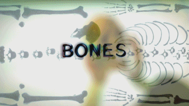

¿De qué trata la serie?
Bones es una serie de televisión estadounidense de drama criminal que se centra en la Dra. Temperance Brennan, una antropóloga forense, y el agente especial del FBI Seeley Booth. Juntos resuelven crímenes analizando restos humanos, especialmente esqueletos. La serie mezcla ciencia, investigación y relaciones personales, presentando casos intrigantes y complejas tramas personales a lo largo de 12 temporadas. 